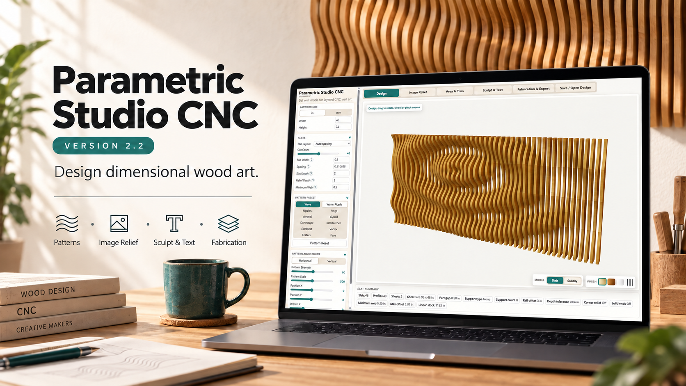
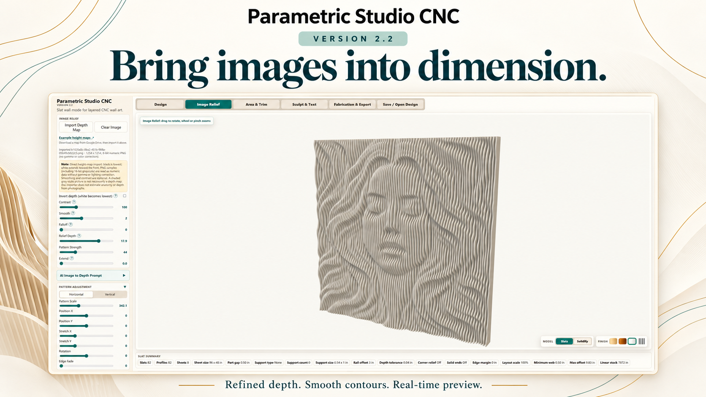
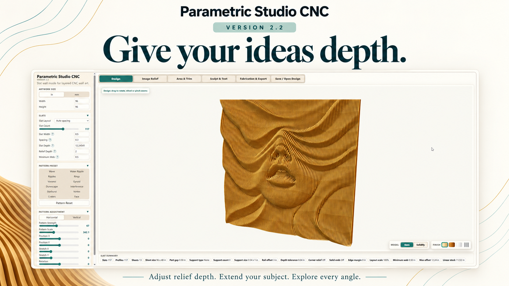
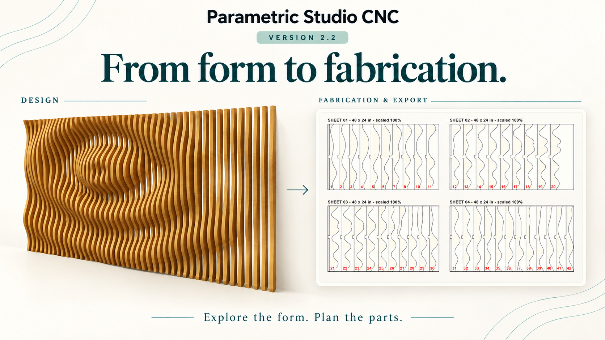
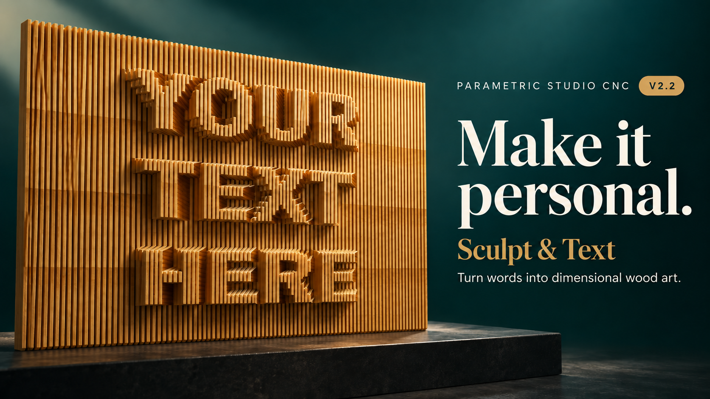
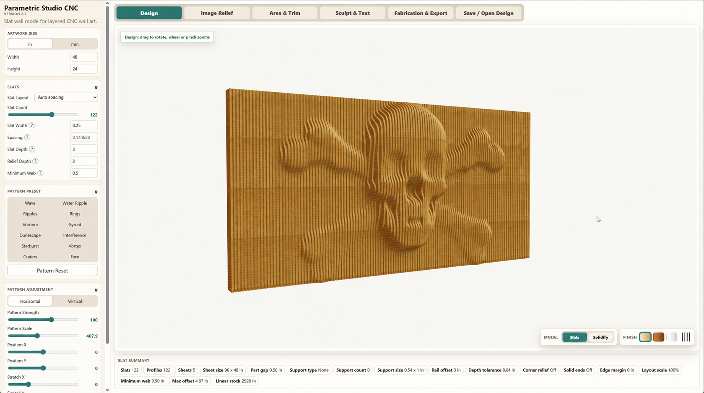
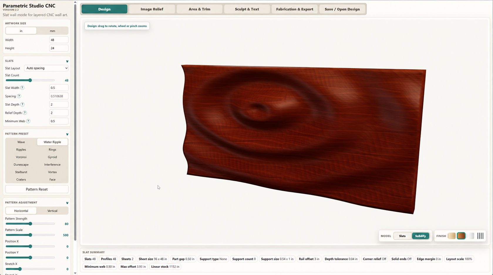
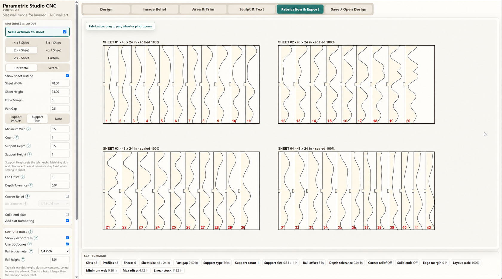

Read the height map directly
Import 8-bit or 16-bit grayscale PNG height maps. Black represents the lowest surface and white projects farthest forward, with grayscale values mapped consistently to height.
Bring height maps into dimension with Parametric Studio CNC 2.2. Explore richer image relief, shape your wood slat designs, and prepare fabrication layouts in your desktop browser.

Start with a size and material plan, build the pattern, then move into fabrication output when the design is ready.
Choose imperial or metric units, artwork size, slat count, spacing, width, depth, and relief settings.
Use built-in presets, import a depth map, sculpt the surface, or exclude areas for real-world installations.
Review sheet layouts, support rail details, part spacing, edge margin, numbering, and machine-ready output.
Discover image relief, flowing patterns, personal lettering, and fabrication layouts. Browse the gallery, or select an image for a closer look.







Turn a grayscale height map into a dimensional slat design. Version 2.2 gives you finer control over the depth, smoothness, and forward position of your imported artwork.
Import 8-bit or 16-bit grayscale PNG height maps. Black represents the lowest surface and white projects farthest forward, with grayscale values mapped consistently to height.
Increase relief depth while preserving the slat backing. Use Extend to move only the imported subject forward while keeping its internal depth differences intact.
Fine-tune Pattern Strength and relief depth, then use optional smoothing, contrast, or Invert Depth to suit your map. Preview the changes as you work.
Download an example height map, or copy the app’s AI image-to-depth prompt into your image-generation tool. Import the resulting map when it is ready.
Use a true height map for predictable relief. A shaded grayscale photograph can turn lighting and surface texture into unwanted depth. The importer reads height values; the copyable AI prompt is a separate preparation aid.
Alongside Image Relief, the latest release improves the way you design, preview, and plan your parts.
Work with up to 2,048 slats, with preview performance improvements for higher-resolution projects.
New Heart and Lips trim presets, plus shape adjustment and rotation controls.
Switch brush trimming on when you need it. With the brush off, left-drag rotates the preview. Clearer arrows and readouts make controls easier to use.
Tall slats stay side by side while the selected sheet orientation is preserved. Oversized parts visibly extend beyond the sheet for easier planning.
Parametric Studio CNC is made for CNC users, woodworkers, and makers who want fast control over slat count, spacing, depth, sheet layout, support pockets, tabs, rails, and export files.
Generate waves, ripples, rings, gyroid, vortex, craters, dunescape, starburst, face, and other CNC-friendly relief styles.
Import 8-bit or 16-bit grayscale PNG height maps. Adjust relief depth, Pattern Strength, Extend, smoothing, contrast, and inversion while previewing your design.
Preview sheet layouts, scale to material size, control part gaps, edge margins, support pockets, support tabs, and slat numbering.
Create clear zones for TVs, shelves, cabinets, fireplaces, or other architectural features while preserving the surrounding parametric design.
Push, lower, smudge, pinch, and add text to adjust the relief after the base pattern is generated.
Save and reopen project files locally using JSON so designs can be updated as the software evolves.
The full version unlocks files intended for downstream CAD/CAM software, including profile vectors and 3D preview geometry.
| Features | Free | Personal | Commercial |
|---|---|---|---|
| Real-time pattern design (waves, rings, gyroid, vortex, etc.) | ✓ | ✓ | ✓ |
| Depth map relief import | ✓ | ✓ | ✓ |
| Sculpting tools (push, smudge, pinch, text) | ✓ | ✓ | ✓ |
| Fabrication layout preview | ✓ | ✓ | ✓ |
| Export SVG / DXF (CNC & laser ready) | ✕ | ✓ | ✓ |
| Export STL (3D preview/reference) | ✕ | ✓ | ✓ |
| Save/open project files (JSON) | ✕ | ✓ | ✓ |
| Sell finished physical products made with the software | ✕ | ✕ | ✓ Unlimited |
| Use in a business / CNC shop with multiple users | — | ✕ | ✓ |
| Priority support | — | ✕ | ✓ |
Personal is for designing and fabricating for your own personal, non-commercial use. Commercial unlocks unlimited sales of finished physical products (dimensional art, panels, commissions) made with your designs, plus shop/team use.
The software runs in a modern desktop web browser and is intended for users who already understand CNC setup, tooling, material holding, feeds, speeds, and CAM preparation.
Quick answers for makers comparing parametric wood slat panel design tools, depth map relief workflows, and CNC-ready export options.
A parametric artwork is a dimensional artwork whose shape is controlled by adjustable design values. In a wood slat panel, changing the profile of each slat creates waves, patterns, or image reliefs across the assembled panel. Parametric Studio CNC lets you adjust those patterns, the artwork dimensions, and the slat spacing while previewing the result in 3D.
It is browser-based CNC dimensional art software for creating parametric wood slat panels, depth map reliefs, fabrication layouts, and export files.
Yes. The full version exports SVG, DXF, STL, and JSON design files for downstream CAD and CAM workflows.
Yes. Import 8-bit or 16-bit grayscale PNG height maps to create slat-based relief geometry. Black is lowest and white projects forward. Version 2.2 adds greater depth control while preserving the slat backing, plus subject-only Extend and optional smoothing, contrast, and depth inversion. Use a true height map; a shaded photograph is not necessarily depth data.
The app is designed for modern desktop browsers. A laptop or desktop computer is recommended for the best experience.
Selling finished physical products requires the Commercial license — this covers unlimited sales, with no cap on volume. The Personal license is for your own non-commercial use only and doesn't permit selling items made with the software. If you're already using the Personal license commercially, you'll need to upgrade — contact us at ozsoftwareps@gmail.com.
Try the free version in your browser, then unlock export and save/open features when you are ready to fabricate.